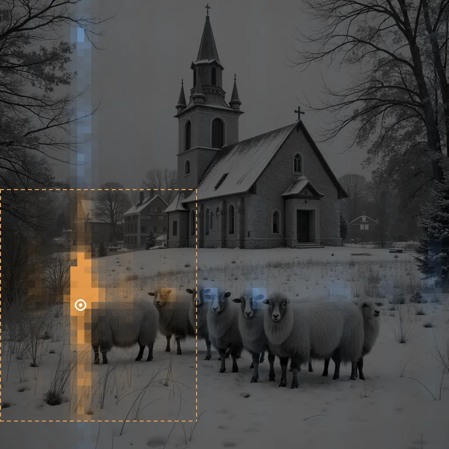
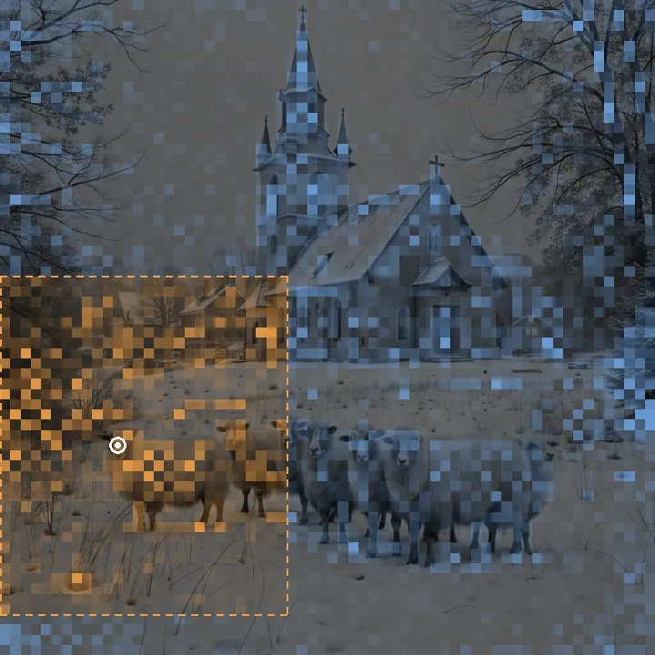
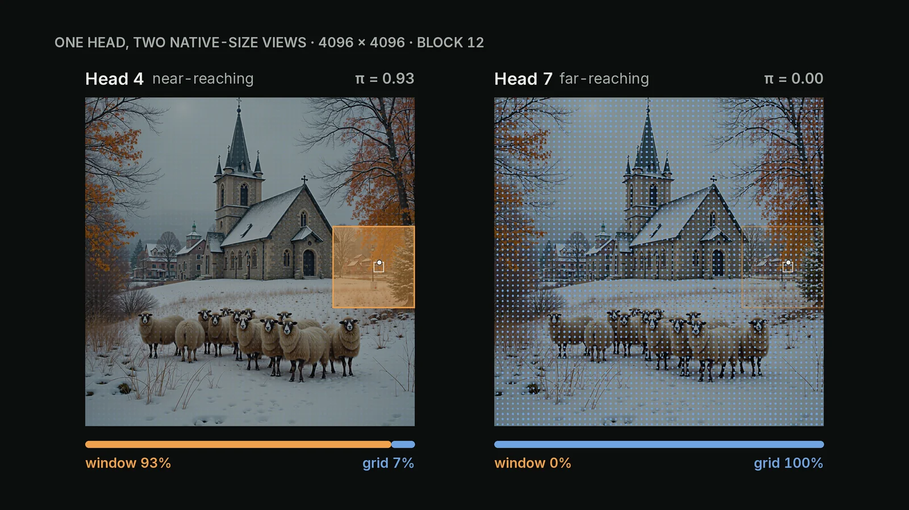

Measured once at 1024², reused at 4096², no training
Reach Is a Property of the Head
Scale-Covariant Attention for High-Resolution Diffusion Transformers
49.2sper 4096² image on one GH200
4.1×faster than AReA
10of 10metrics better than AReA, at each of three seeds
The loop: three 4096² progressive SCA images zoomed to native pixels, the first three of the seeded draw behind the paper’s Figure 1 (one showcase prompt per category).
A 4096² image in 49.2 seconds
SCA replaces only the attention of FLUX.1-dev inside HRDiT’s sampler: 4.1× faster than AReA and better on all ten per-image metrics at three seeds. Against HRDiT it is statistically indistinguishable on three preference scores, in 46% of its time.
How it works
No training and no new model: SCA changes where each attention head looks.
-
1
Some heads look near, some look far, and each keeps its habit through the whole run.
97.5% of how far a head looks is set by the head, not by the denoising step.

Head 4 looks near 
Head 7 looks far -
2
At any size, every head gets both views: a native-size window around the patch and a native-size grid over the whole image.

-
3
Each head mixes the two by how far it looked at 1024², measured once, with no training.
Head 4
93% window7% grid
Head 7
0% window100% grid
How an image forms
Each patch of the image is drawn by heads that look near and heads that look far. Watch the run, patch by patch, from noise to native pixels.
Against the baselines, prompt by prompt
Slide through the evaluation prompts from the one where AReA is furthest ahead to the one where SCA is; click an image to zoom all four to native pixels.

Results
FLUX.1-dev at 4096² on 195 Aesthetic-4K prompts, with 95% paired intervals and Holm’s correction over the ten per-image metrics.
+0.40ImageReward over AReA [0.32, 0.49]
10/ 0metrics better / worse than AReA, at each of three seeds
46%of HRDiT’s time, statistically indistinguishable on three preference scores
| Method | Seconds ↓ | ImageReward ↑ | HPSv2.1 ↑ | PickScore ↑ | MUSIQc ↑ | Patch FID ↓ |
|---|---|---|---|---|---|---|
| AReA | 202.4 | 0.92 | 27.16 | 22.36 | 50.4 | 102.9 |
| UltraImage | 308.5 | 1.28 | 30.77 | 23.33 | 41.7 | 109.5 |
| HRDiT | 107.0 | 1.34 | 30.92 | 23.46 | 53.5 | 103.0 |
| Progressive SCA | 49.2 | 1.32 | 31.02 | 23.41 | 54.1 | 107.7 |
Where it falls short. Patch FID is higher than HRDiT’s and single-pass SCA’s; the opening, window sizes and bridge are set by hand; at 6144² and 8192² samples show block and stripe artifacts. In single-pass mode, small additional figures occasionally appear in scenes with people or animals; the progressive configuration reduces this to the level of the multi-stage baselines.
All results and the method in detailGallery96 prompts side by sideOther backbones (exploratory)
The idea, start to finish
Citation
@article{sca2026,
title = {Reach Is a Property of the Head: Scale-Covariant
Attention for High-Resolution Diffusion Transformers},
author = {Anonymous},
journal = {Under review},
year = {2026}
}